FASHION / ARTICLE 002
COLUMN
OHMYZINE vs VSH
OHMYZINE vs VSH ファッション目線でVHSにハマるまで
POPEYE、buffer、Video anan。VHSに惹かれた流れをそのまま書いた記録。
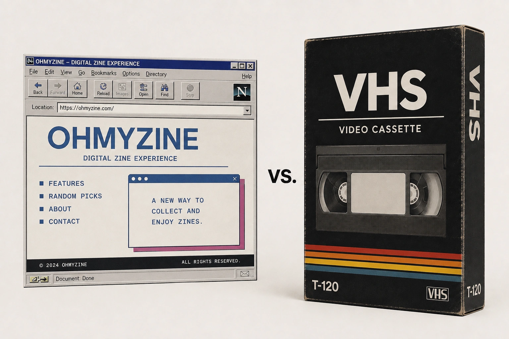
ついにVHSプレイヤーを買いました。
きっかけは単なる懐古趣味というより、ファッションや雑誌を掘っていく中で「VHSにしか残っていないもの」が妙に気になり始めたからです。
今回は、ヤフオクでプレイヤーを落札した話から、なぜVHSに興味を持ったのか、そして実際に古いファッション系ビデオを再生してみて何を感じたのかまでをまとめました。
まずはVHSプレイヤーを導入
死ぬほど切手が付いた不穏な荷物が届きました。これ、ヤフオクで7千円で落札したあの荷物に間違いないはずです。
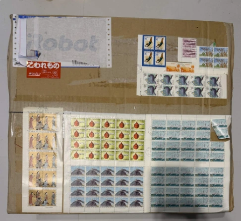
さて、早速開封。梱包が厚いということは精密機器系っぽい。何が出てくるのかちょっとワクワクします。
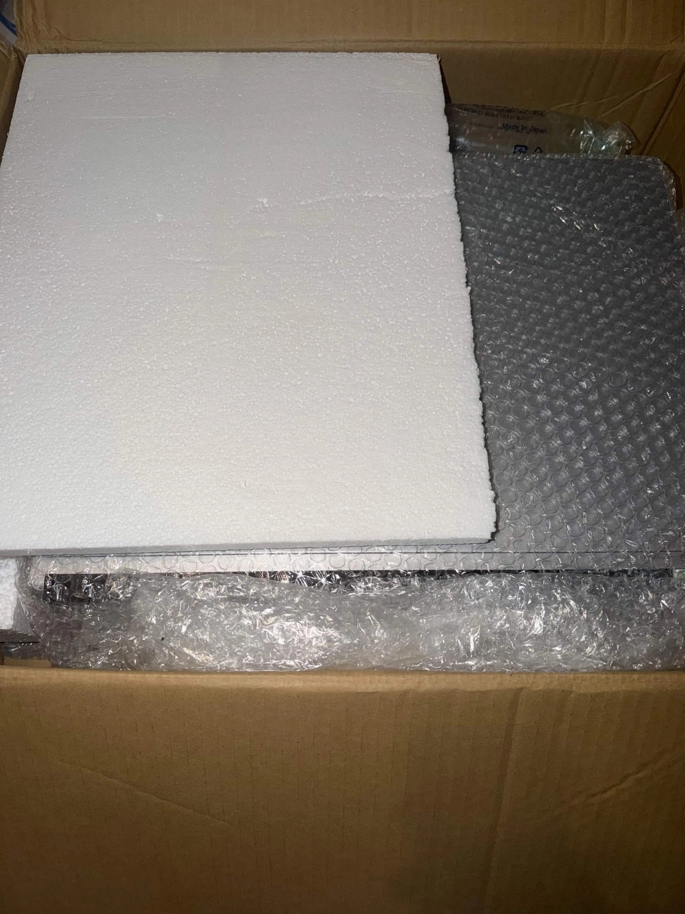
正解は Panasonic DMR-EX200V。いわゆるVHSプレイヤーです。到着してから気づいたんですが、これがかなり万能でした。
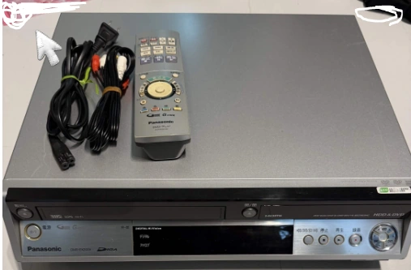
DVD再生、SDカード再生対応、VHS↔DVD↔SDカードへのビデオ変換対応、さらにHDMI対応。間に余計な機材を挟まずに再生できるのが本当に楽です。オールマイティーすぎて、かなり“一生モノ”感があります。
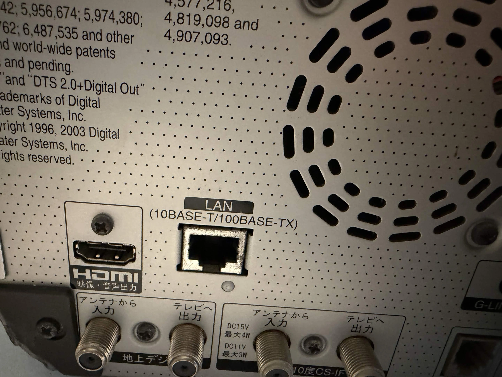
VHSが気になった本当の理由
もともと私がVHSを気になった理由は、WTAPSの西山徹さんがヒューマンメイド社で新しいブランド「buffer」を始める際に、POPEYEで新連載された「Bufferを追って。03」を読んだからです。
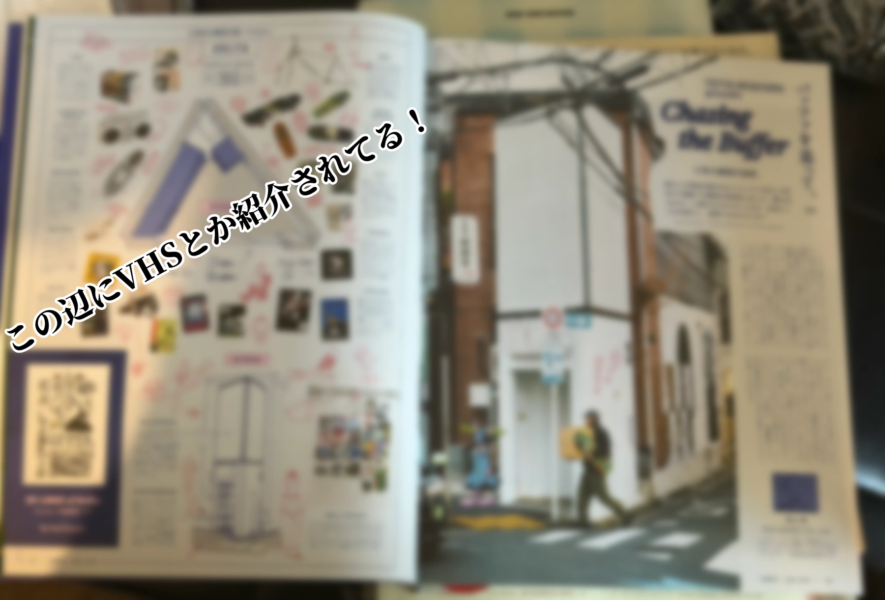
その中では、buffer のインスタレーションスペース「buffer delta」が紹介されていました。そこはbufferの脳内のコア的部分を表現する場所で、ラジカセ、VHS、DVD、ポスター、BMX、スケートボード、レコード、映画ものなどが並べられているそうです。
そこで私は、なんでVHSなんだろう？と引っかかりました。しかも左ページには具体的に何をディスプレイしているか書かれていたのですが、そこに並んでいたのは全部、未DVD化の映画とスケートビデオ。
未DVD化ということは、サブスク化もされていないし、VHS以外ではほとんど見ることができない。つまり、VHSというメディア自体が「アクセスの制限されたアーカイブ」になっているわけです。そこにものすごく惹かれました。
この回の「Bufferを追って。」は、西山徹さんのアイテムのセレクトが面白くて、裏原雑誌的なおすすめアイテム紹介の濃さもかなり強い。普通に雑誌としておすすめです。一緒に西山徹さんになっちゃいましょう、という気持ちになります。
最近メルカリを見てみると、安いVHSビデオは500円前後から出ていて、気になるものが多すぎる。完全に入口を見つけてしまった感じで、これからかなり本格的に漁るつもりです。
Video anan を再生してみる
とりあえず今は、2か月前に大阪のまんだらけで購入したビデオテープが1本手元にあります。それが「Video anan VOL.2 LOVELY MAKE-UP 渡辺サブロオのラブリーメイク」。
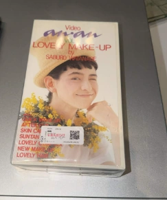
まんだらけで購入した「Video anan VOL.2 LOVELY MAKE-UP」。
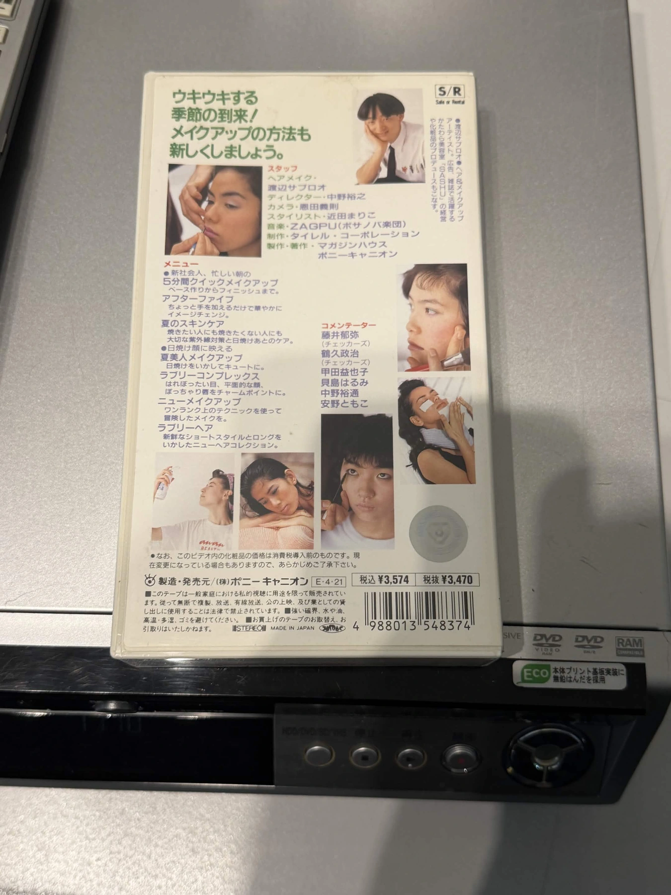
ケース裏面。メイク内容や出演者情報も残っている。
当時のメイクのビデオなんて貴重すぎる、と思って購入しました。しかもほぼ無料。今ならTikTokやYouTubeでいくらでも見られる内容に、当時は約3500円払っていたと思うと時代の違いをかなり感じます。
再生してみると、画質の粗さはあるものの音は良く、かなり見やすいです。ちょうど今のコンデジブームとも重なるので、画質の悪さすら脳内でおしゃれに変換される。むしろそれが良いです。
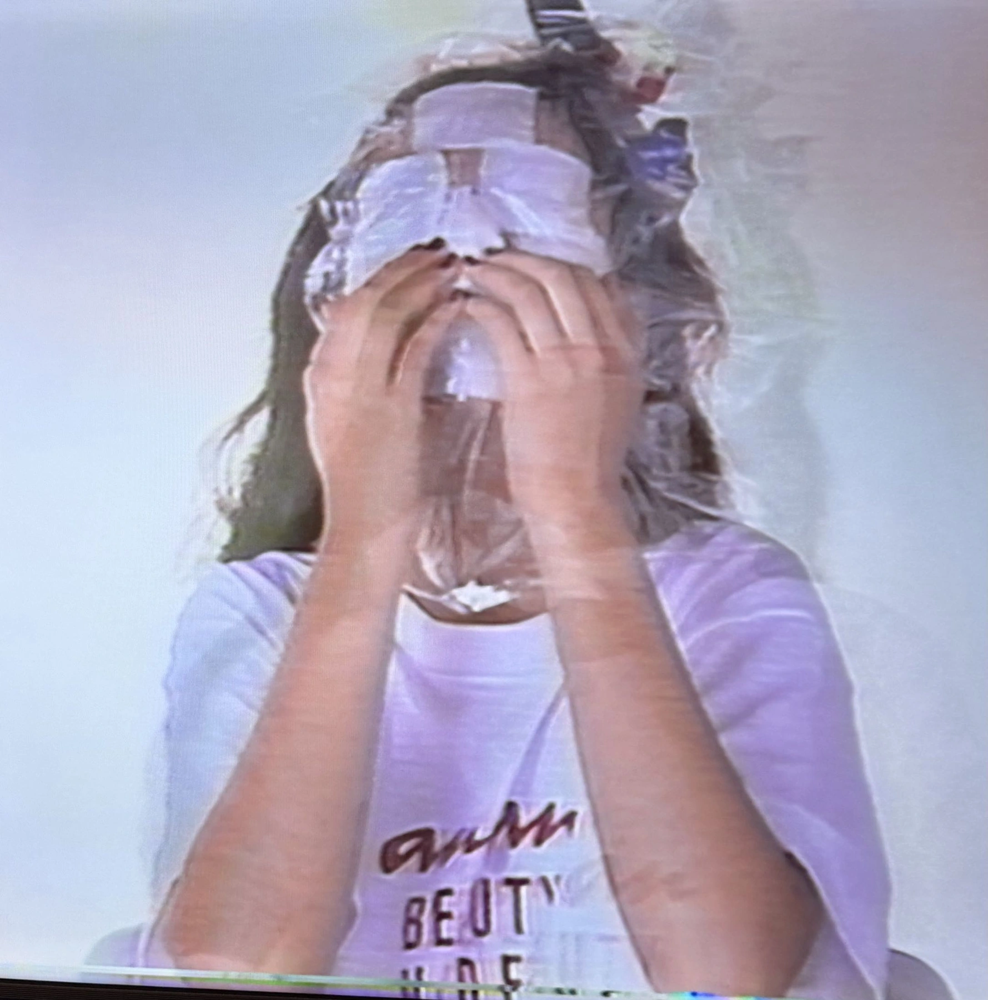
動画の雰囲気はかなり昭和感があって面白いです。作中で「顔がまあまあな人は性格で補正してください」みたいなことを言っていて、結構時代を感じました。
さらに、コメンテーターとしてチェッカーズの藤井フミヤさんも登場します。UNDERCOVER関係で名前を見ることがたまにあるので、個人的にはそこもテンションが上がるポイントでした。
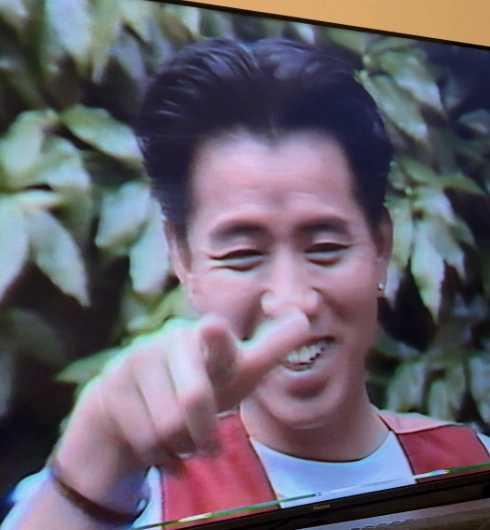
映像の中の服がかなり良い
そして面白かったのが、動画終盤でメイクモデルの着用衣装が紹介されるところです。アニエスベー、ハリウッドランチマーケット、Y's、コム デ ギャルソン、マーガレット・ハウエル、キャサリン ハムネットと、かなりブランド選びのセンスが良い。
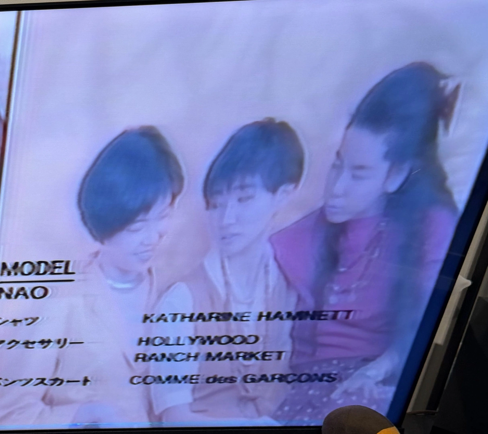
コーディネート全体も、上質なコンサバ感がありつつ今見ても古びていない雰囲気で、本当に惚れ惚れします。
その中でも個人的ベストルックは、Y's のコンビネゾンを着たモデルさん。バサッとしたショートヘアとハリのあるコンビネゾン、それに対するウエスタンベルトのウエストマークが最高にかっこいいです。
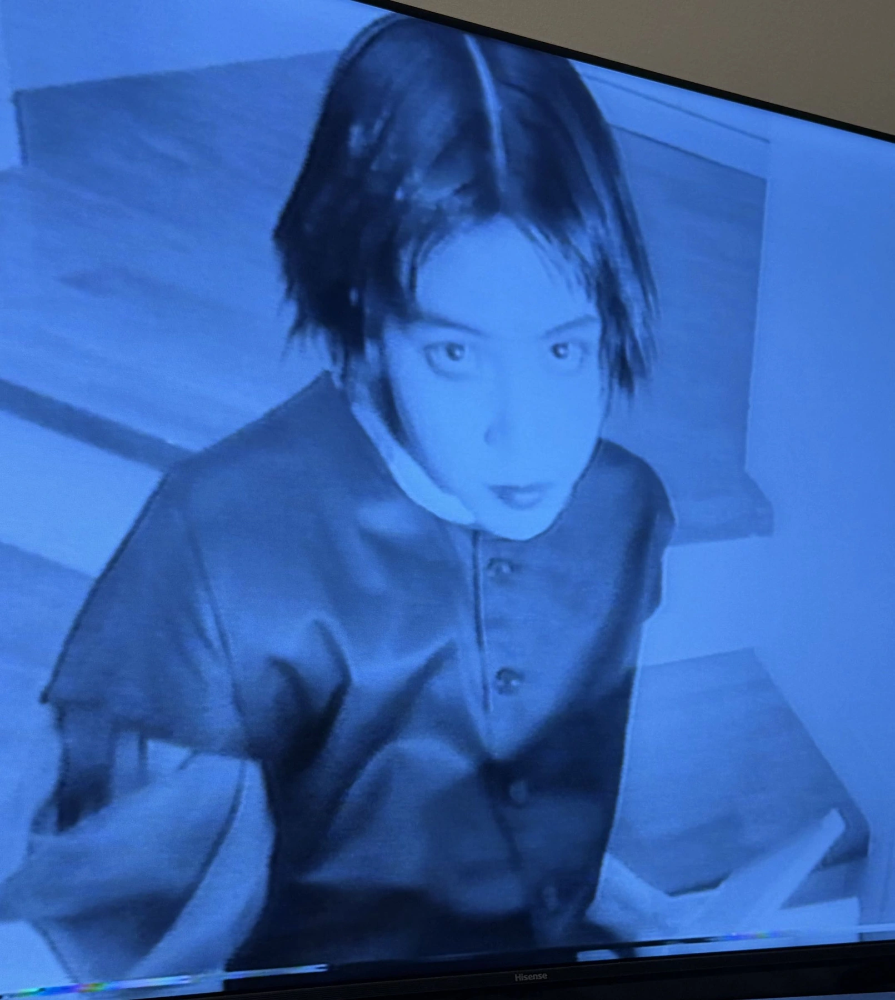
ちょっとメンズライクな力強さがありつつ、どこか童話っぽい Olive 的なやわらかさもある。このバランスが今見てもすごくかっこいいです。
あとから調べてみたところ、この anan のビデオは現在メルカリ等でも流通がほぼ見当たらず、画像検索にも詳細があまり出ませんでした。もしかすると結構レアなのかもしれません。ちょっと誇らしい。
これから掘りたいVHS
こうして1本再生しただけでも、VHSの面白さはかなり伝わってきました。映像の内容そのものだけでなく、再生環境を整えるところから始まり、何が残っていて何が消えているのかを辿る体験まで含めて面白い。
今後はファッション系VHSに加えて、日本語ラップのVHSも掘っていきたいです。古い雑誌を読むのと同じで、今はもう配信に乗っていないもの、DVD化されていないもの、検索しても情報が出てこないものほど気になります。
これからファッション系＋日本語ラップのVHSを、少しずつ掘っていくつもりです。まだ入口に立ったばかりですが、このメディアならではの面白さをちゃんと追いかけていきたいです。